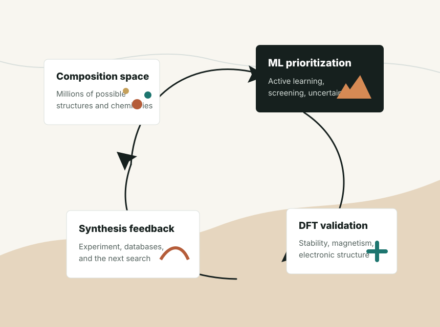
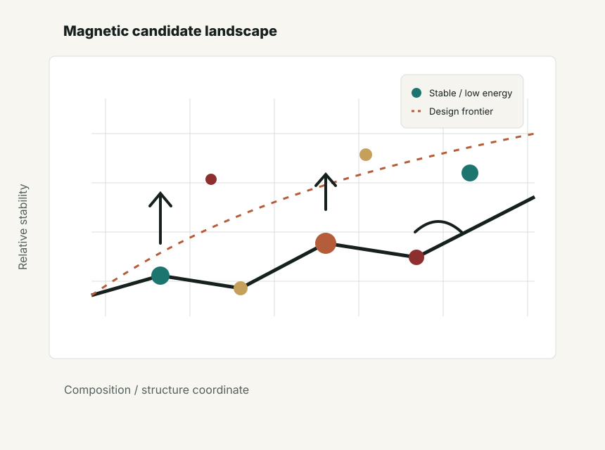
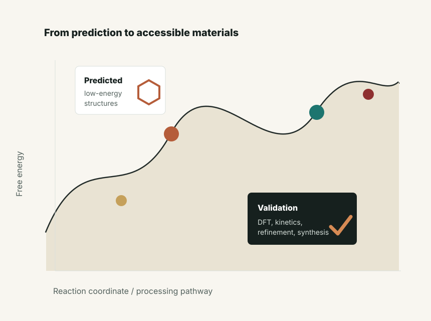

AI/ML-Accelerated Discovery
Adaptive feedback, deep-learning screening, and scalable workflows for exploring large composition and structure spaces.
Computational Materials Science · AI for Discovery
Scientist I at Ames National Laboratory developing AI/ML-assisted, first-principles, and exascale workflows to discover and understand functional materials.
My work bridges predictive computation and experimental validation across magnetic materials, rare-earth and rare-earth-free compounds, intermetallics, ML interatomic potentials, and GW/BSE methodology.
Research Direction
I develop computational strategies that reduce the distance between a promising composition and a materials claim that can be checked, reproduced, and eventually synthesized. The common thread is a closed loop: generate candidates, learn from first-principles calculations, interrogate physical mechanisms, and feed the result back into the next search.
Adaptive feedback, deep-learning screening, and scalable workflows for exploring large composition and structure spaces.
Rare-earth-free magnets, Fe-Co-X compounds, magnetic anisotropy, spin-state physics, and noncollinear magnetic order.
Machine-learning potentials for phase stability, forces, energies, and synthesis or growth kinetics in complex materials.
Large-scale GW/BSE methodology and quasiparticle/optical-property calculations for low-dimensional and bulk materials.
Scientific Highlights

PNAS · npj Comput. Mater. · JMCA · PRM
Integrated ML screening, adaptive feedback, DFT validation, and high-performance workflows for accelerated materials design.

Fe-Co-X · Pb-based magnets
Physics-aware searches for rare-earth-free magnets and analysis of magnetic anisotropy, moments, and spin-state coexistence.

Antagonistic pairs · MLIP
Materials discovery framed around stability, kinetics, experimental refinement, and the practical path from prediction to compound.
Selected Publications
The selected work below emphasizes papers that anchor the current research program: AI-assisted discovery, magnetic materials, exascale workflows, intermetallic compounds, and large-scale electronic-structure methodology.
Current Scientific Directions
Scalable workflows that combine AI/ML models, DFT validation, phase-diagram construction, and community-ready software.
Rare-earth-free and critical-element-reduced magnetic materials with attention to anisotropy, stability, and manufacturability.
Free-energy, kinetics, and experimental refinement as first-class constraints in the design of new intermetallic compounds.
Collinear, noncollinear, and spin-spiral calculations for systems where magnetic frustration changes the materials story.
Open Resources
Trajectory
AI/ML-assisted discovery, exascale workflows, magnetic materials, and synthesis-aware computational design.
Adaptive genetic algorithms, ML-guided materials discovery, magnetic systems, and experimental collaborations.
Large-scale GW quasiparticle calculations for 3D and 2D materials: methodology development and applications.
Contact